Abstract—Broken facilities, water and power outages and safety hazards on campus are usually reported informally, so students cannot tell whether anyone acted and staff cannot prioritise. CampusFix is a Flutter mobile application backed by Firebase that lets verified students report incidents with a category, description, location and optional photo, and follow each report through a four-stage lifecycle (Submitted → In Review → In Progress → Resolved) in real time. Authorised staff triage a priority-sorted queue, change status with notes, set priority and hide abusive reports. The app uses a layered architecture (UI, logic, data) with Riverpod for state management, Cloud Firestore streams for live updates, and server-side security rules for role-based access control. Rules are verified with 11 emulator tests and the app with 14 unit and 4 widget tests.
Index Terms—Flutter, Firebase, Cloud Firestore, Riverpod, role-based access control, incident reporting, mobile computing.
Facility and safety problems on a residential campus—no water in a residence, a projector failing mid-lecture, an unlit gate—are typically reported through word of mouth, chat groups or e-mail. Reports get lost, duplicates pile up, and the reporter receives no feedback, which discourages future reporting. Staff, in turn, lack a single prioritised view of what is open.
CampusFix addresses this with three ideas: (1) a reporting flow that takes under thirty seconds, (2) a transparent status timeline that the reporter can watch update live, and (3) a staff workflow with priorities, notes and moderation, protected by server-enforced roles. Section II lists requirements, Sections III–VI describe the architecture, data model, state management and security, Sections VII–VIII the UI/UX rationale and key workflows, Section IX testing, Sections X–XII challenges, limitations and lessons learned. Appendix A maps each assessment criterion to its evidence.
| ID | Requirement | Implementation |
|---|---|---|
| F1 | Campus-only registration, login, logout, persistent session | Firebase Auth (email/password); domain allow-list @alustudent.com; mandatory e-mail verification; userChanges() stream restores the session on launch |
| F2 | Submit incident with category, description, location, optional photo | Six categories, validated form, campus location list, camera/gallery picker with on-device downscaling and upload progress |
| F3 | Browse, search and filter reports | Live feed; status and category filters; free-text search over title, location and description |
| F4 | Track status lifecycle | Four-step timeline built from a history sub-collection; in-app notifications on each change |
| F5 | Staff-only administrative actions | Status, priority, resolution note, hide-as-spam—enforced in Firestore rules |
| N1 | Real-time updates | Firestore snapshot streams → Riverpod StreamProviders |
| N2 | Privacy & anti-abuse | Anonymous reporting (name never stored), verified-email gate, five-open-reports limit, staff moderation |
| N3 | Maintainability | Three-layer architecture, repository interfaces, 17 reusable widgets, lint-clean code |
The app follows a three-layer architecture (Fig. 1). The UI layer contains screens and reusable widgets and never imports Firebase. The logic layer holds Riverpod providers and notifiers that combine streams, apply filters and run actions. The data layer defines repository interfaces (AuthRepository, IncidentRepository) with two implementations each: a Firebase implementation and an in-memory fake used for tests and offline UI work. A compile-time flag (FAKE_BACKEND) selects the implementation; the rest of the app is unaware of which is in use.
flowchart TB UI["UI layer — lib/ui
Screens: Auth · Home · Feed · Report form · Details · Staff dashboard · Profile
Widgets: IncidentCard · StatusPill · StatusTimeline · CategoryTile · StatTile"] L["Logic layer — lib/logic (Riverpod)
authState · visibleIncidents · filters · staffQueue
ReportFormController · IncidentActions"] D["Data layer — lib/data
AuthRepository · IncidentRepository (interfaces)"] FB[("Firebase
Auth · Firestore · Storage")] FK[("In-memory fakes
tests & offline demo")] UI -->|watch / call| L -->|streams / async calls| D D --> FB D -.-> FK
Navigation uses go_router with a single redirect function that reads the auth stream: signed-out users are sent to login, unverified users to the verification screen, and staff are kept out of student-only routes. A StatefulShellRoute keeps each bottom-navigation tab's state alive.
Firestore is document-oriented, so the schema is shaped around the app's queries rather than normalised tables (Fig. 2). Status history is a sub-collection so the incident document stays small and the timeline can be streamed independently. Notifications live under each user so that a single owner-only rule protects them.
erDiagram
USERS ||--o{ NOTIFICATIONS : "users/{uid}/notifications"
USERS ||--o{ INCIDENTS : "reporterId"
INCIDENTS ||--|{ HISTORY : "incidents/{id}/history"
USERS { string name string email string department string role "student|staff" timestamp createdAt }
INCIDENTS { string title string description string category string location string status string priority string reporterId string reporterName bool isAnonymous bool isHidden string photoUrl string resolutionNote timestamp createdAt timestamp updatedAt }
HISTORY { string from string to string byName string note timestamp at }
NOTIFICATIONS { string incidentId string title string message bool read timestamp at }
incidents/{uid}/{incidentId}.jpg.
// incidents/{id} — example document
{ "title": "Water shortage", "category": "water", "location": "Student Residence",
"description": "No water supply on the 2nd floor since this morning...",
"status": "inProgress", "priority": "high", "isHidden": false,
"reporterId": "Kx91…", "reporterName": "Amina Hassan", "isAnonymous": false,
"photoUrl": "https://firebasestorage.googleapis.com/…/incidents/Kx91…/a8f2….jpg",
"resolutionNote": null, "createdAt": Timestamp, "updatedAt": Timestamp }
// incidents/{id}/history/{hid}
{ "from": "inReview", "to": "inProgress", "byName": "David Mugisha", "note": "Plumber assigned", "at": Timestamp }
Queries and indexes. All queries order by a single field (createdAt, at), which Firestore indexes automatically, so no composite indexes are required. Status/category filtering and search run on the client over the live list—an intentional trade-off for a campus-scale dataset (Section XI).
Atomic writes. Creating a report writes the incident and its first history entry in one batch; a staff status change writes the incident update, a history entry and the reporter's notification in one batch, so the timeline and notifications can never disagree with the status. Timestamps use FieldValue.serverTimestamp() to avoid device clock skew.
Riverpod was chosen over BLoC because Firestore already exposes streams: a StreamProvider wraps each stream, and derived Providers compose them declaratively (for example, filteredFeedProvider = visibleIncidents ∘ feedFilter). Every derived value recomputes automatically when any input changes, so a staff update propagates to the home stats, feed, profile list, details timeline and notification badge without manual wiring. AsyncValue gives every screen explicit loading, error and data states, rendered by one shared AsyncSliverList widget.
Mutable UI state lives in Notifiers (filters, report form, auth and incident actions). Widgets keep only ephemeral state such as text controllers and a password-visibility toggle; no application state uses setState. Streams are keyed on the signed-in user's id so they restart cleanly on account switch rather than erroring after sign-out.
// logic/incident_providers.dart (excerpt)
final filteredFeedProvider = Provider<AsyncValue<List<Incident>>>((ref) {
final filter = ref.watch(feedFilterProvider);
return ref.watch(visibleIncidentsProvider).whenData(filter.apply);
});
Asynchrony. Actions are async methods wrapped in AsyncValue.guard; the UI listens with ref.listen to show snackbars on failure. Firebase exceptions are translated to user-readable AppFailure messages in the data layer, both for one-off writes and on streams via handleError.
Client checks improve UX but cannot be trusted, so every rule that matters is enforced in firestore.rules and storage.rules. The role is stored in users/{uid}.role; self-registration can only create student, and a user can never modify their own role. Staff are promoted manually in the console by an administrator.
| Actor | Allowed | Denied (examples) |
|---|---|---|
| Signed-out / unverified | Register (campus e-mail only) | Reading any report |
| Student | Read reports; create a report as themselves with status submitted; edit/delete own report while submitted; mark own notifications read | Spoofing reporterId; pre-setting status or isHidden; extra fields; changing status/priority; self-promotion |
| Staff | Change status, priority, isHidden, resolutionNote; write history and notifications | Rewriting a report's title or description |
| Storage | Owner uploads images < 5 MB to own folder | Non-images, large files, other users' folders |
allow update: if isStaff()
&& changedOnly(['status','priority','isHidden','resolutionNote','updatedAt']);
function isStaff() { return verified() &&
get(/databases/$(database)/documents/users/$(request.auth.uid)).data.role == 'staff'; }
Privacy. When a student reports anonymously the real name is never written to the document (the stored name is "Anonymous student"), so it cannot leak through a direct database read; ownership is still tracked by uid for editing and rate limiting.
The interface follows the provided mockups: a single purple accent (#8B10F2) on a soft lavender-grey background, rounded 16 px cards and Plus Jakarta Sans. Status has a consistent colour language everywhere (amber Submitted, blue In Review, purple In Progress, green Resolved), so users read state at a glance. A raised centre "Report" button keeps the primary action one tap away from every tab. The report form uses large category tiles instead of a dropdown because the category is the most important triage signal. Every list has loading skeletons, an empty state with a next action, and an error state with retry; destructive actions require confirmation; submission shows progress and a success sheet with "Track my report". Touch targets are at least 48 dp and interactive elements carry semantic labels.
The screenshots below are rendered from the application's own widget tree (Flutter test renderer, iPhone-size 390×844 pt viewport, real fonts and icons) using seeded demo data; the same screens run on Android against Firebase in the video demonstration, where the corresponding Firebase Console records are also shown.
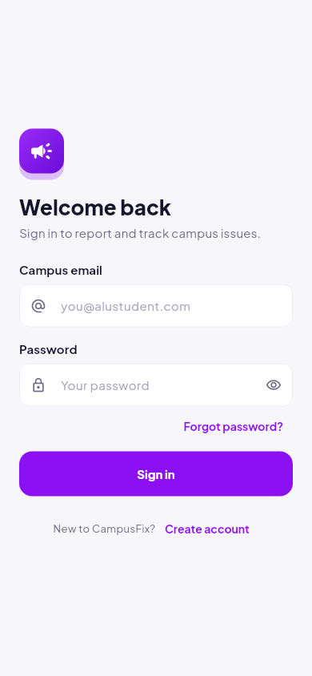
(a) Login with campus e-mail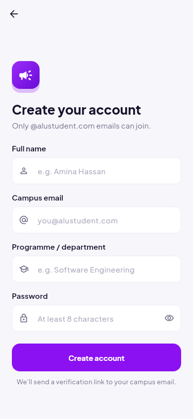
(b) Registration (domain-restricted)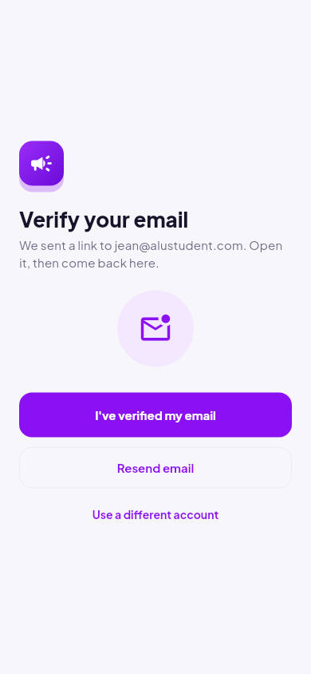
(c) Mandatory e-mail verification@alustudent.com; the same check is repeated in the security rules, so a modified client cannot bypass it.email_verified. "I've verified" reloads the user and refreshes the ID token so rules see the new claim immediately.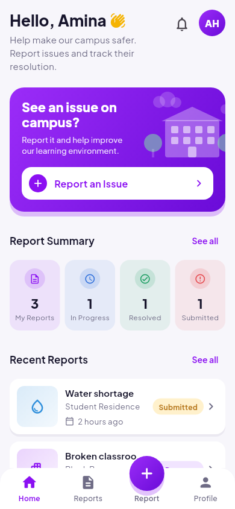
(a) Student home with live summary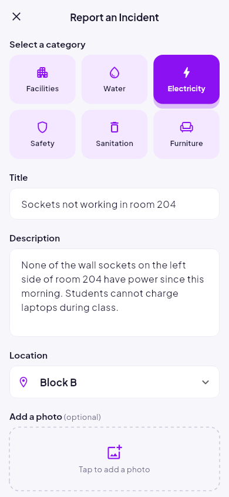
(b) Report form, category selected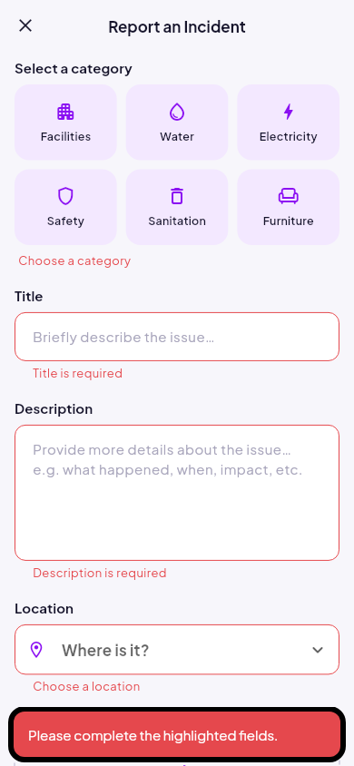
(c) Inline validation feedback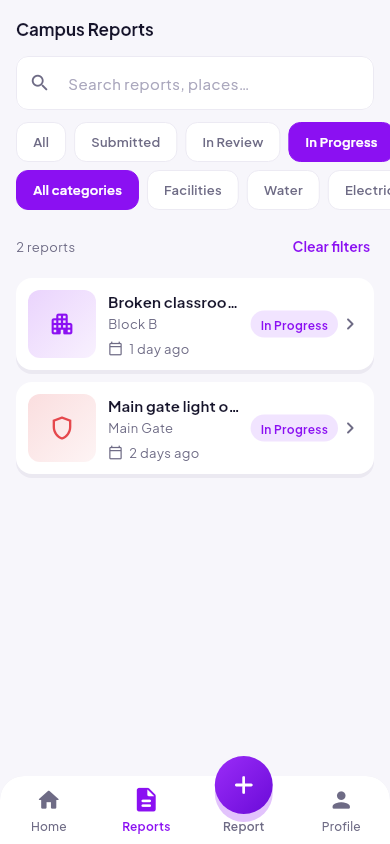
(a) Feed filtered to “In Progress”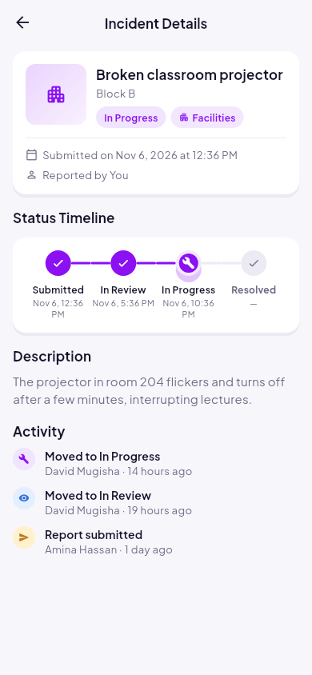
(b) Details with live status timeline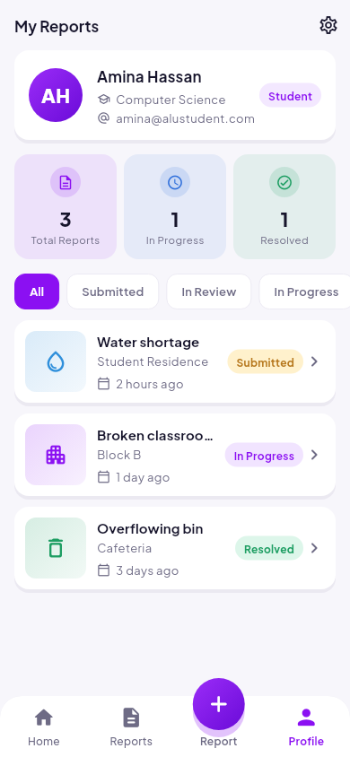
(c) My Reports / profilehistory sub-collection and updates in real time; the activity log shows who moved the report and when.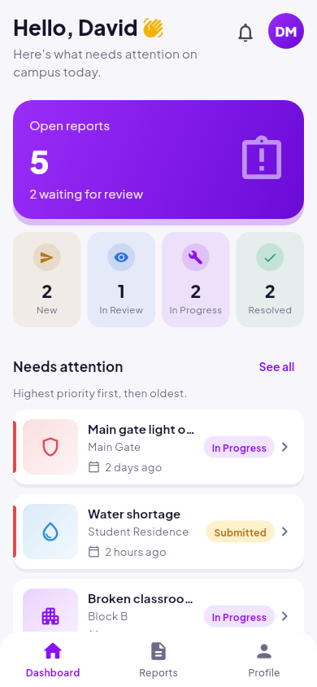
(a) Staff dashboard: priority queue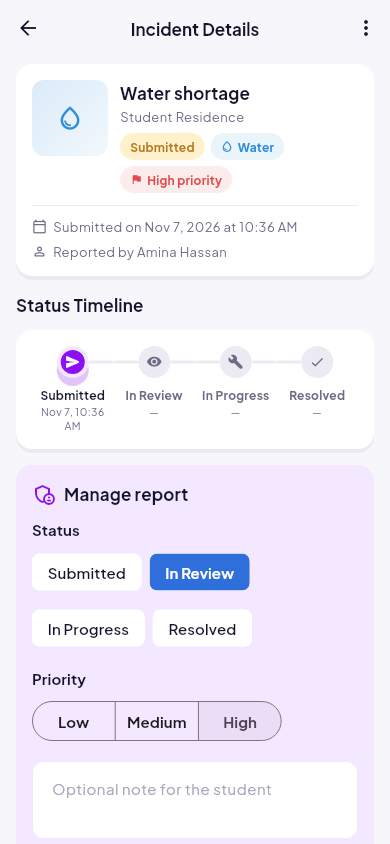
(b) Staff controls on details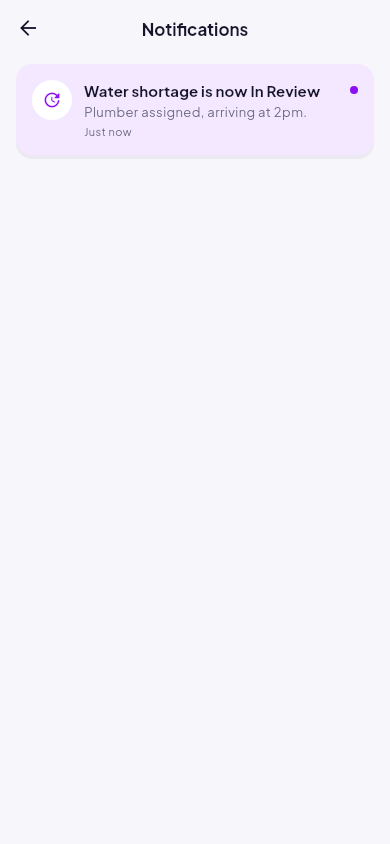
(c) Student notification after update| Level | Tool | What is verified | Result |
|---|---|---|---|
| Static analysis | flutter analyze (flutter_lints) | Whole codebase | 0 issues |
| Unit | flutter_test | Validators (domain allow-list), date formatting, filter and stats logic, hidden-report visibility, repository batch semantics, report controller (validation, anonymity, 5-report limit), staff-only status change | 14 pass |
| Widget | flutter_test | Login validation and error snackbar; report form validation and error clearing | 4 pass |
| Security rules | Firestore emulator + @firebase/rules-unit-testing | 11 scenarios covering registration, self-promotion, read gating, create validation, workflow fields, owner edit window, staff batch, notifications | 11 pass |
| Live end-to-end | REST against production project | Demo student signs in, reads 7 reports, is denied status change and self-promotion | Pass |
| Visual | Golden rendering (tool/screenshots_test.dart) | 12 screens rendered at phone size; any layout overflow fails the run | 12 rendered, 0 overflows |
| Manual | Android emulator / device | Full student and staff flows, two-device real-time update, Firebase Console records | Shown in video |
Because every repository has an in-memory fake behind the same interface, logic and widget tests run in milliseconds without network or emulator, while rule tests run against the real rules engine.
Lost validation errors. A widget test revealed that Title/Description errors disappeared after submit. The cause was an inline "Choose a category" message inserted above the fields inside a ListView: list children are matched by index, so the insertion shifted the fields and rebuilt their state. The fix keeps a fixed-size placeholder in that slot.
Layout overflow found by rendering. Rendering every screen to an image exposed a 7 px overflow in the bottom navigation: the raised "Report" button was positioned with Transform.translate, which moves paint but not layout. It was rebuilt with a Stack so the button overhangs the bar without consuming height.
Stream race in fakes. async* generators subscribe to the underlying broadcast stream lazily, so an event emitted immediately after listening was dropped. Replacing them with Stream.multi subscribes synchronously.
Dependency mismatch. google_fonts 9 targets the new standalone material_ui package and its TextTheme type is incompatible with Flutter's; the project pins google_fonts 8.
Rules are not filters. Firestore rejects a list query if any matching document could be unreadable, so per-document visibility for hidden reports cannot be expressed as a read rule on a feed query; hiding is therefore a moderation flag applied in the logic layer (see Section XI).
(1) Search and filtering run on the client, suitable for hundreds of reports; at larger scale a search service (e.g., Typesense) and paginated queries would be needed. (2) The five-open-reports limit is enforced in the app, because security rules cannot count documents; a Cloud Function could enforce it server-side. (3) Hidden reports are removed from student views but remain readable via direct API access. (4) Notifications are in-app only; push notifications via FCM would require a Cloud Function trigger. (5) Staff promotion is manual. (6) Photo upload requires the Firebase Blaze plan.
Design the data layer as an interface first. Writing the UI against repository interfaces with an in-memory fake allowed every screen to be built and tested before Firebase existed, and swapping to Firebase changed no UI code.
Security belongs on the server. Hiding a button is a UX decision; only security rules make "staff-only" true. Rule tests exercise attacks—spoofed reporters, self-promotion, status tampering—that no amount of clicking through the app would ever attempt, which is why they must be automated.
Tests find the bugs inspection misses. The list-index error, the stream race and the navigation overflow all looked correct on reading and were only revealed by widget tests and rendered screenshots.
Model the domain once. Keeping status and category as enums with a single style extension (label, colour, icon) kept the UI consistent across every screen and made changes one-line edits.
CampusFix demonstrates that a small, well-layered Flutter codebase can deliver a real-time, role-secured reporting workflow. Repository interfaces made the app testable without a backend, Riverpod streams made live updates nearly free, and server-side rules ensure that the role model holds even against a modified client. The main lesson was that correctness bugs (the list-index and stream-race issues) were found by tests, not by inspection, which justified investing in tests early.
| Criterion | Where to find it |
|---|---|
| UI/UX design | Sec. VII, Figs. 3–6; video 0:00–4:30 |
| Firebase Authentication (ALU e-mail + verification) | Sec. II F1, VI; Fig. 3; lib/data/repositories/firebase_auth_repository.dart; video 0:40–2:00 |
| Firestore CRUD & backend workflow | Sec. IV (schema, batches); firestore_incident_repository.dart; video 2:00–3:30 |
| State management & architecture | Sec. III, V; Fig. 1; lib/logic/ |
| Feature implementation | Sec. II, VIII; Figs. 4–6 |
| Technical explanation | Video 6:00–8:30 (widgets, navigation, forms, async, streams, Riverpod, rules) |
| Code quality | Appendix B; flutter analyze: 0 issues; 17 reusable widgets |
| Report quality | This document: diagrams (Figs. 1–2), screenshots (Figs. 3–6), rules (Table I), testing (Table II), IEEE references |
| Product thinking, privacy & misuse | Sec. II N2, VI (anonymity), VII; staff moderation and report limit |
lib/
core/ theme tokens · constants · validators · formatters · router (auth/role redirects)
data/ models (Incident, AppUser, StatusChange, AppNotification, enums)
repositories: interfaces + Firebase + in-memory fake implementations
logic/ Riverpod providers: auth, incidents, filters, report form, staff actions
ui/ widgets/ (17 reusable components) · screens/ auth · student · staff · shared · shell
test/ unit + widget tests (18)
rules-test/ Firestore security-rule tests on the emulator (11)
tool/ screenshot renderer used for this report
firestore.rules · storage.rules · firebase.json
flutter pub get flutter run # Android emulator/device, live Firebase flutter run --dart-define=FAKE_BACKEND=true # offline demo data flutter test # 18 app tests cd rules-test && npm install && npm test # 11 security-rule tests (needs Java)
Staff accounts are promoted by setting users/{uid}.role = "staff" in the Firebase Console; the app itself can never grant this role.